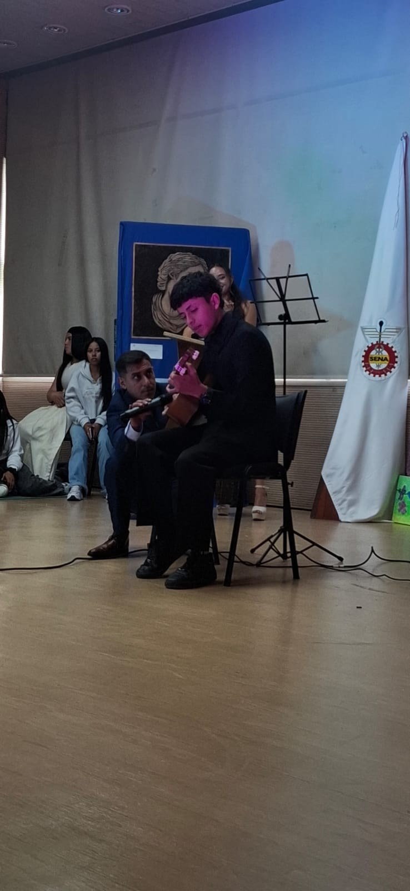
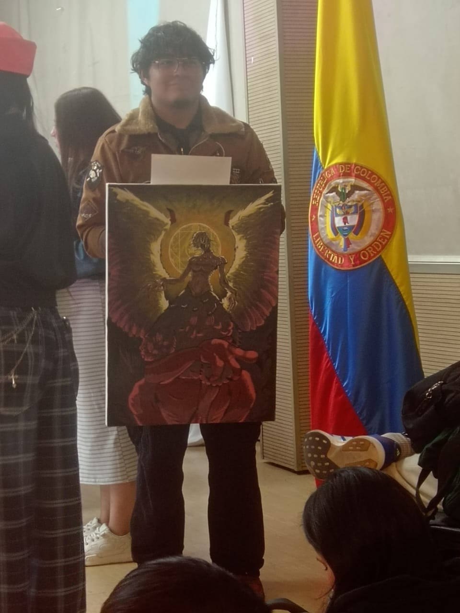

Estudiante de ADSO de la ficha 3227025. Hoy quiero contarles mi experiencia participando en el evento de “Batalla de Talentos SENA”, en donde también actué tanto como participante y competidor.
Desde que soy joven practico con la guitarra; es parte de mi cultura familiar. Participar en esta batalla fue realmente gratificante, porque más allá de mis habilidades como desarrollador están los talentos propios de mi personalidad, como es el tocar la guitarra.
Estoy realmente feliz porque, más allá de haber obtenido el 2.º lugar, la experiencia fue de otro mundo. Agradezco a Bienestar al Aprendiz por haberme ayudado en mi puesta en escena con la guitarra y por permitirme mostrar mis habilidades frente al público.

Jimmy en plena puesta en escena con la guitarra.
Fue realmente sorprendente ver las habilidades de baile de las parejas que se presentaron a lo largo de la presentación. Quiero mostrarles esta pareja en particular, que demostró carisma, actitud y coordinación dentro de su puesta en escena, además de una canción al verdadero estilo colombiano.
La pareja que conquistó al público con su coordinación.
Sorprendente lo que las palabras pueden llegar a mostrarnos a lo largo de nuestra vida. Hoy quiero compartirles el cuento de Andrés Felipe Riaño, quien es mi compañero de estudio y con su cuento “Voy tarde para el SENA” nos muestra la carisma propia de su personalidad.
Estoy realmente orgulloso de ver a mi compañero sobresalir en competencias como estas.
Andrés leyendo “Voy tarde para el SENA”.
Para finalizar, la sección de dibujo fue de las mayores sorpresas del evento. Es increíble ver las habilidades de creatividad de los competidores del Centro de Manufactura en Textil y Cuero.
En la imagen pueden observar al ganador del evento, quien mostró un arte sin igual desde su imaginación.

La obra ganadora de la Batalla de Dibujo.